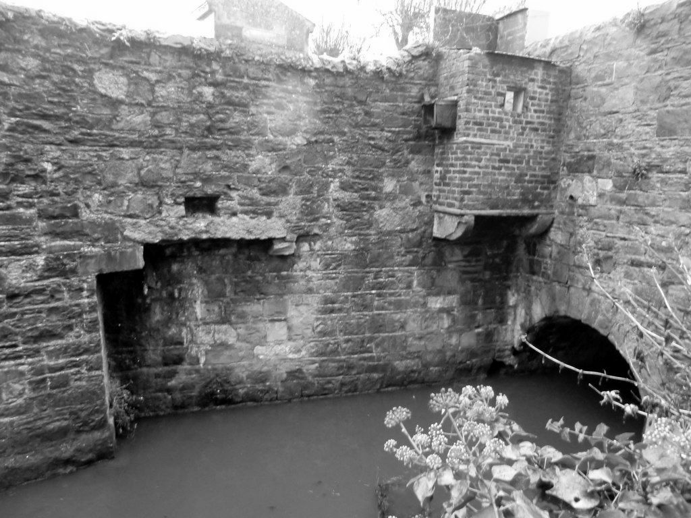
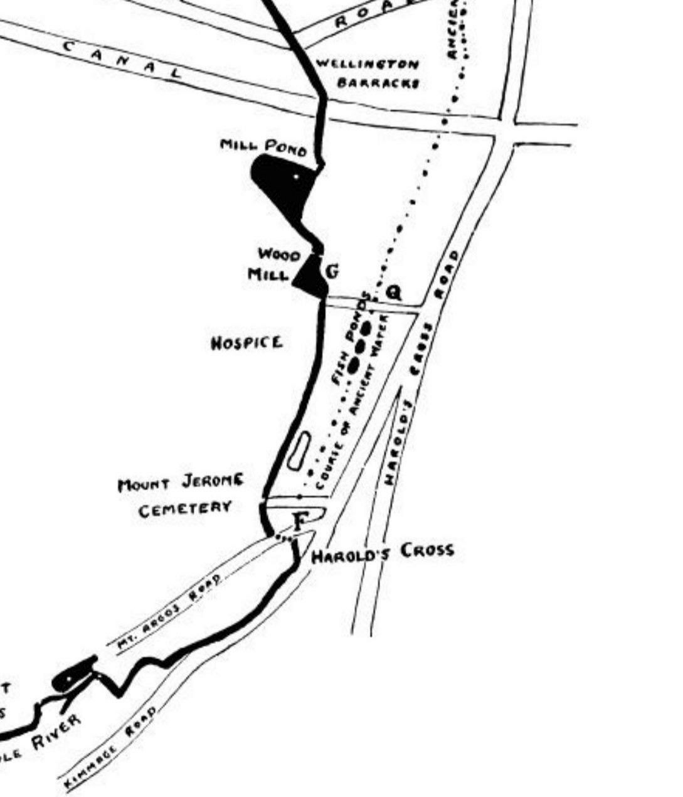
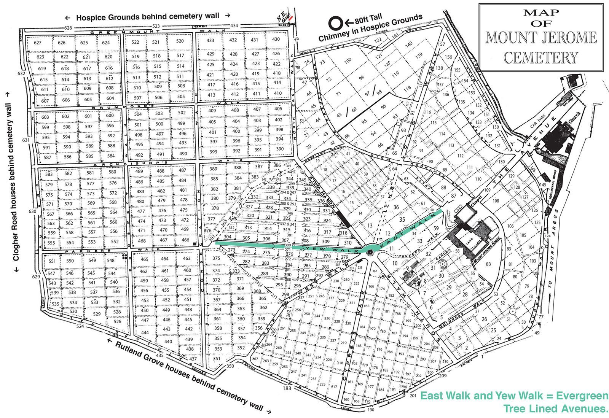

Stop 11 of 16 · Harold’s Cross
Mount Jerome
A Victorian cemetery, and perhaps another monks’ diversion.
Mount Jerome
The General Cemetery Company of Dublin was set up by Robert Shaw under an Act of Parliament in 1834. The first burial took place on 19 September 1836, and there have been about 250,000 since.
As one of Dublin’s main cemeteries it holds many graves of historical interest, among them those of John Millington Synge and Jack B. Yeats.
Another diversion?
To enter Mount Jerome, the Poddle makes an almost right-angled turn.
In his 1927 paper, Rev. Myles Ronan asks whether this was another diversion of the original river, again made for St Thomas’s Abbey, this time to serve its mills. For that reason this stretch is sometimes called the Abbey Stream, though it is more often just called the Poddle, as it carries most of the river’s water. The map page shows the Abbey Stream, which leaves the Poddle just downstream of here, as an amber band.
Greenmount and the Hospice
A flour mill once stood near the cemetery gates. Just downstream, the Poddle powered Greenmount Mills. A corn mill on the site was turned into a cotton mill by James Greenham by 1807, and in the mid-19th century the Quaker Pim family enlarged it, making cotton and linen; the Pims were also known for Irish poplin. The mill pond survived until it was covered over in the late 1960s.
Our Lady’s Hospice, founded in 1845 by Mother Mary Aikenhead, stands on the river’s banks at Harold’s Cross, and the 1910 Ordnance Survey map shows another mill pond in its grounds. In the October 2011 floods, a nurse from the hospice lost her life.
Going underground
The stream enters the cemetery behind the Russian Orthodox Church of the Holy Apostles Peter and Paul, flows under the cemetery’s entrance road and then along its eastern boundary. From here it is culverted under Greenmount, and it passes beneath the Grand Canal in a siphon.


